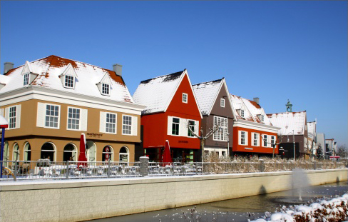
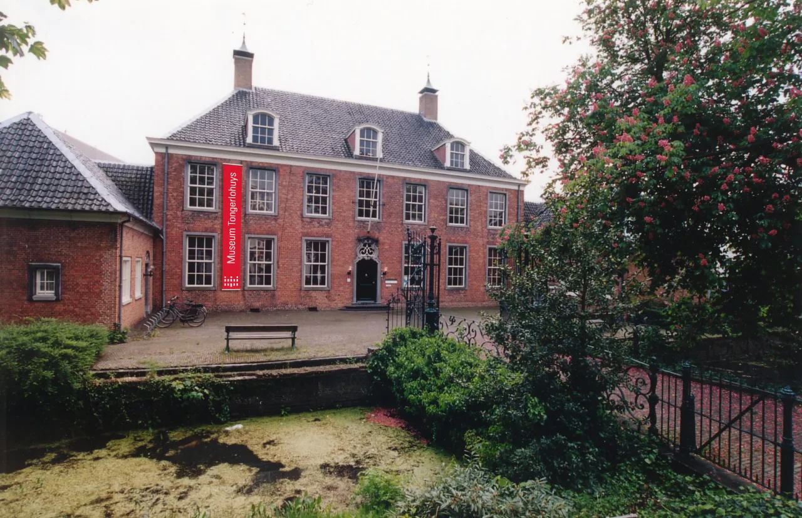

Designer Outlet Roosendaal schrijft zelf: 'Designer Outlet Roosendaal' is sinds 2006 een factory outlet center in de Nederlandse gemeente Roosendaal. Het is het derde outletcentrum in Nederland. Er worden artikelen van meer dan 100 merken verkocht. Voor de overname in 2017 door het Britse bedrijf McArthurGlen was de naam 'Rosada Fashion Outlet', een variatie op de naam van de stad Roosendaal. De nieuwe naam werd 'Designer Outlet Rosada'. In 2019 werd de naam opnieuw gewijzigd, nu in 'Designer Outlet Roosendaal' om het regionale karakter van het winkelcentrum meer te benadrukken.'
Een intro van museum Tongerlohuys zelf: 'In het Tongerlohuys beleeft u het verhaal van Roosendaal. Vijf iconen nemen u mee door de geschiedenis van stad en streek. Laat u vertederen door het Liga-meisje, zegenen door meneer pastoor, op sleeptouw nemen door de conducteur, toespreken door burgemeester Schoonheijt en verrassen door een steeds wisselende vijfde icoon. Vanuit de actualiteit werpt deze laatste een verrassende blik op onze historie.'